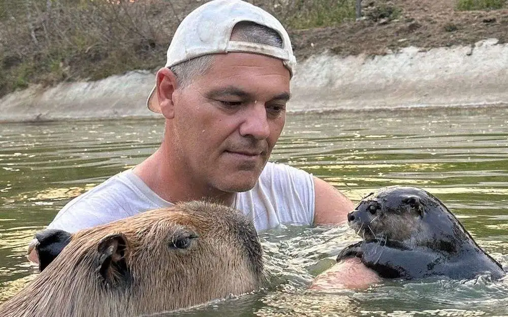

Santuario Libertad de Frank Cuesta
El Santuario de Libertad, fundado por Frank Cuesta en Tailandia, es un refugio dedicado a la conservación y protección de animales salvajes en peligro de extinción. Aquí, se rescatan, rehabilitan y liberan animales víctimas de la explotación ilegal y del tráfico de especies. Además, el santuario trabaja en la reeducación y sensibilización de las comunidades locales sobre la importancia de la vida silvestre y la conservación del medio ambiente.
